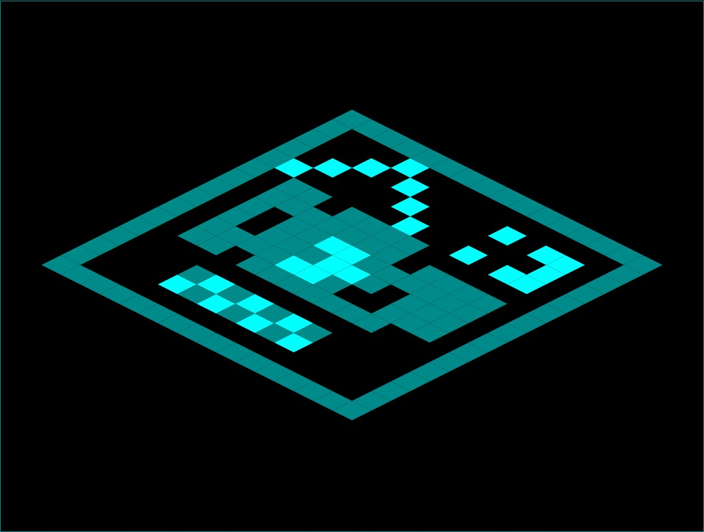
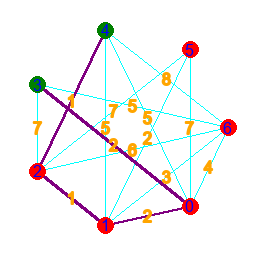

2025/07/15: tile-based isometric renderer (javascript canvas)
how it looks like
includes:
- loading tilemap from innerHtml
- vertex rendering
- matrix rotation
- first the tilemap data is read by iterating through each character
- the polygon data is saved into an array:
the nested indices and the tile width manipulate the position of the vertices, which are matrix transformed - at the draw event, the it iterates through the polygon array and draw each one indivudaully
github repository
2025/06/07: dijkstra (python)

|

|

|
 |
desc:
- Dijkstra's algorithm is used to find the path between two points on a graph, with the least sum of the numbers appended to its nodes.
- To model the graph, we make an array for the points and an array for the nodes. In nodes are 3-long arrays, where the values are: start, end, appended value(length).
- To find the shortest path, we find simply just go trough all of them. If there is no possible way to get from the start to the end, the algorithm will also know.
- This is done by creating a paths array, which will store all the routes, as we go trough every single possible one. Before the loop, it has one path inside, which has only the start point inside.
- We loop until all our found paths end at the end point, or it is proven that getting there is impossible. At the beginning, if a correct route hasn't been found yet, we check if there's a path, that can be continued without going somewhere it has already been. If this is the case, then it is impossible to get from the start to the end.
- For every path inside the array, if the path has not finished yet, then we find all the possible points to continue towards. Then we append new arrays, storing the continuations to paths. After this, we remove the paths that have been continued, or circle around.
- Finally, we collect the sum of each path into and array, and find its minimum. Then get all paths with a sum equal to the minimum, when our output needs them.
github repository